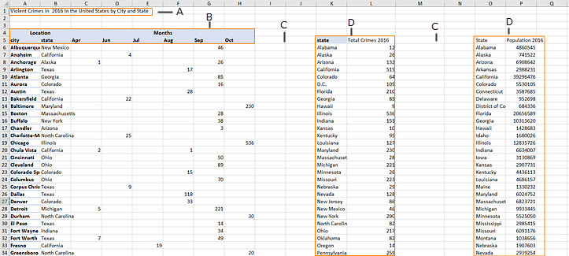
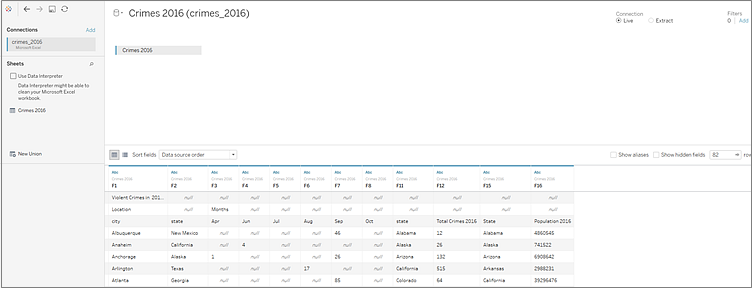
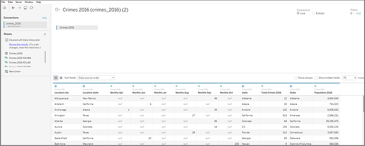
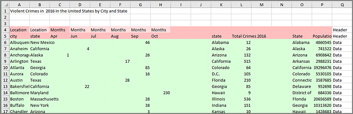
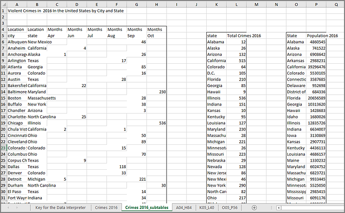
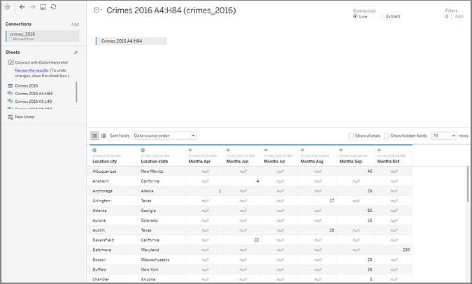
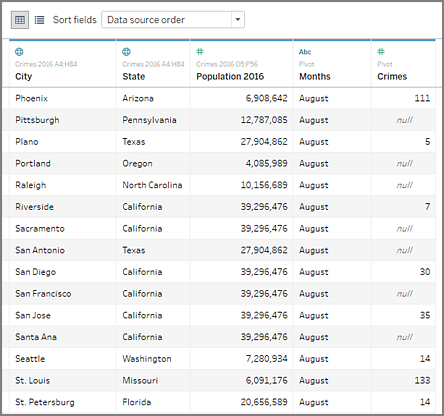

Data Interpreter Example
In this example we are connecting to an Excel spreadsheet with violent crime data by city and state for the year 2016. This spreadsheet includes multiple tables on one sheet and some extra formatting.

- Title
- Merged header cells
- Extra white space
- Sub-tables
The extra formatting in this spreadsheet makes it difficult for Workbench to determine what the field headers and values are.
Instead, it reads the data vertically and assigns each column the default value F1, F2, F3 (Field 1, Field 2, Field 3) and so on. Blank cells are read as null values.

To see if Data Interpreter can help clean this data set, we select Use Data Interpreter.
Data Interpreter detected the proper headings for the fields, removed the extra formatting and found several sub-tables. The sub-tables are listed in the Sheets section in the Data pane and are named using the original sheet name and the cell ranges for each sub-table.
In this example there are three sub-tables: Crimes 2016 A4:H84, Crimes 2016 K5:L40, and Crimes 2016 O5:P56.

To examine the results of the Data Interpreter more closely, we click the Review the results link in the Data pane to view an annotated copy of the spreadsheet.
Here we see a copy of the original data, color coded to identify which data was identified as header data and which data was identified as field values.

The next tab shows us the sub-tables that Data Interpreter found, outlined by the cell ranges.

In this example the first sub-table, Crimes 2016 A4:H84, has the main data that we want to work with. To use this table as our data table, we can simply drag the original table off the canvas and then drag the new table to the canvas.

Once we have the data that we want to work with in the canvas, we can do some additional clean up on the data. For example we can:
- Change the field names so that they represent city, state, and month names.
- Pivot the months fields.
- Drag in the third sub-table Crimes 2016 o5:P56 and join it to our first sub-table on the State field to include state populations for our analysis.
- Hide any duplicate fields that were added as a result of the join.
The results might look something like this:

Now we are ready to start analyzing our data in Workbench.
Created with the Personal Edition of HelpNDoc: Free Web Help generator